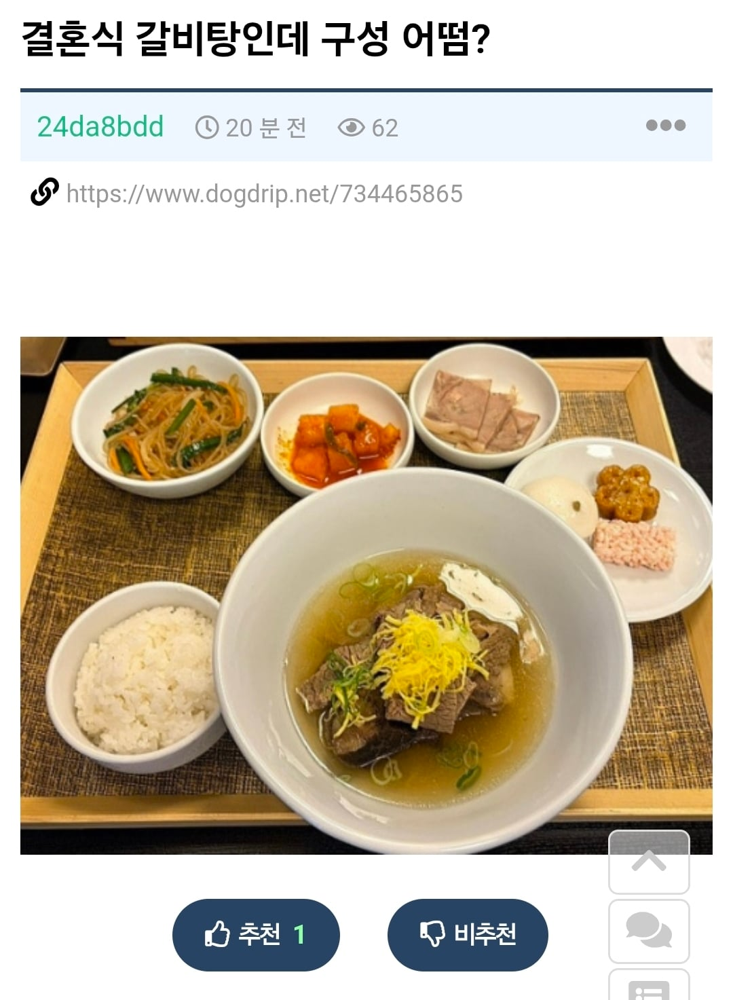

익판에서 욕먹고 있는 결혼식 갈비탕 구성
댓글
밥쳐먹으러 결혼식 가냐? 못먹고 사는 시대도 아니고
밥쳐먹으러 가는건 아닌데
기껏 귀한 주말에 시간쓰고 돈써서 축하해주러 갔는데 대우가 개차반이면 화나지 않을까?
저식사가 개차반임?
개차반은 아니지만 대접받는 느낌은 전혀 없음
저 결혼식 하객들의 거의 대다수는 먹고 나오면서 식사 별로였다고 할듯
어 가는 수고랑 기본 10만 이상인 축의금 비해서는 개별로임 집앞 갈비탕집 15000원보다 양도적은데 너 결식때 하객들 갈비탕줬냐??
결혼식 다니면서 두번 정도 갈비탕으로 먹었는데 난 뷔페가 낫더라
결혼식 끝나고 뷔페 기대하면서 먹으러 가는데 갈비탕이면 좀 아쉬움
음.... 신랑신부가 사연있는분들이면 ㅇㅈ.
젊은애들이면 저 식장은가지마라 괜히욕먹는다
전통혼례하는곳하고.. 판사친구 결혼한 법원식당에서 갈비탕 나왔는데 법원식당은 좀 저런 느낌이긴 했어
단품나오는 결혼식가면 은근 있음
보통 편육대신 갈비찜같은거 나오기는하지만
서울기준으로는 보통 저건 개인 식판이고 앞에 일단 테이블 공용으로 먹는 요리 세네가지는 더 있긴 할거임. 그 요리들은 모자라면 채워줄걸?
뷔페가 아니여서 논란인건가?
갈비탕 주는 결혼식도 몇번 가봤는데
저따위로 허접한 상차림은 살면서 처음봄
저런 갈비탕 나오는곳 코스요리 나오는곳
뷔페 나오는곳 다 가봤는데 뷔페가 제일괜찮은듯..
먹는것 보단 주차랑 가기편한곳이 좋아..
근데 확실히 찬이 좀 부실하긴 한듯 나는 밑반찬 잘 안먹어서 냉동육회가 나와도 뷔페가 낫긴 하더라 ㅋㅋ
친한 사이라면 나중에 식대 얼마짜리였냐고 한번쯤 물어볼듯
사진만 봐서는 식대 3만원 넘으면 안될거 같은 비주얼인데
90년대 까진 갈비탕이 주류였음.
뷔페로 주류가 바뀐건 다 이유가 있다.
코스요리 주는 결혼식도 가봤지만
그냥 보급형 예식장 뷔페가 최고드라
솔직히 식대 생각하면 갈비 존나 푸짐하게 줘야하지 않냐
내 결혼식에 내가 요리하는게 더 낫겠다 시벌...
밥먹으러가냐는 병신들 사회생활안해본티 존나내네 ㅋ
결혼식은 축복만 받는 자리가 아니라 축하하러 와준 하객들에게 감사의 마음으로 대접하는 자리이기도 함. 옛날부터 잔치에서 음식을 푸짐하게 나누던 것도 같은 이유임. 비싼 코스요리까지는 아니더라도 요즘 기본인 뷔페에서 하객들이 먹고 싶은 음식을 충분히 먹고 갈 수 있게 하는 게 손님을 초대한 사람의 기본 예의라고 생각함. 이걸 거지 마인드라고 치부하는 건 잔치의 의미를 너무 가볍게 보는 거임.